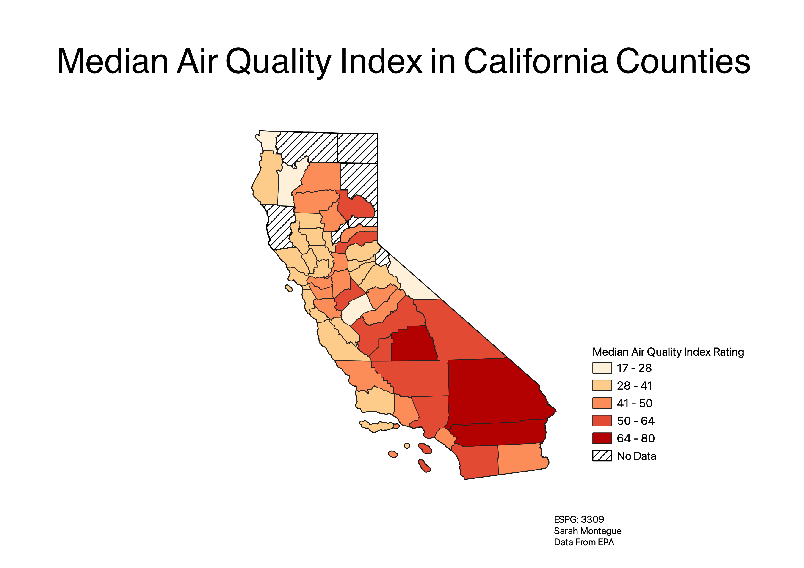

Homework 7: California Air Quality Index
I chose to make a map about Air Quality in California because California has many different things causing air pollution such as smog and forrest fires. California is a very large state geographically, this is part of the reason I made my map about California. The different geography of the State and the different population density around the state means there is a large range of median AQI values. I used the natural breaks categorization to make this chloropleth.

Data used for this project
EPA AQI County data
Cleaned CSV with Average AQI for Counties in California
CVS with joined data
AQI Basics from AirNow
California Counties Geojson